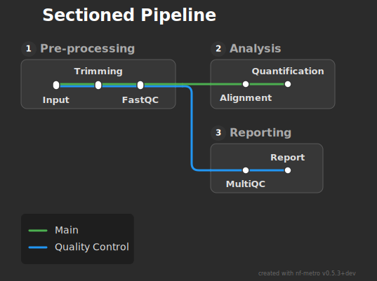
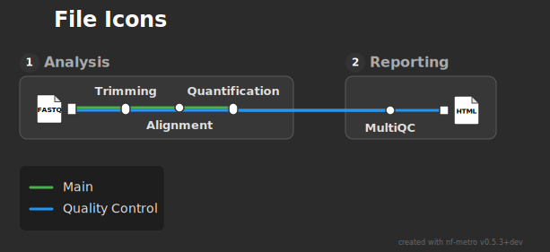
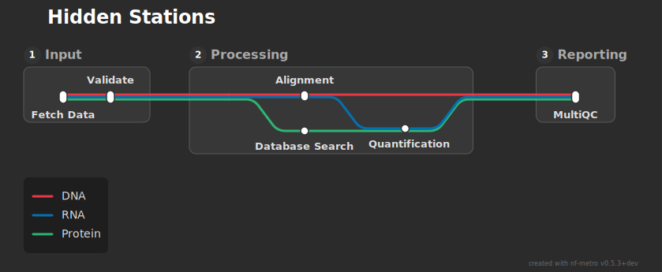
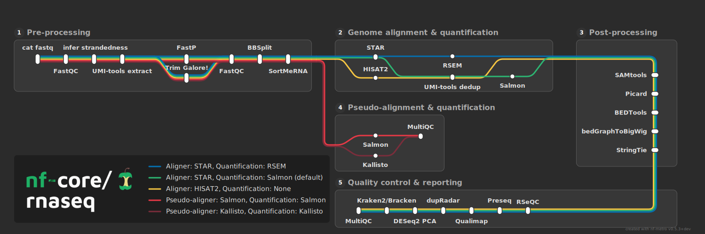

Writing metro maps¶
nf-metro turns text descriptions of pipelines into metro-map-style diagrams. Input files use a subset of Mermaid graph LR syntax, extended with %%metro directives for colors, sections, and layout control.
This guide builds up the format step by step, starting from a flat list of stations and finishing with a multi-section pipeline that fans out, changes direction, and reconverges.
1. Stations, lines, and edges¶
The simplest metro map needs three things: lines (colored routes), stations (pipeline steps), and edges (connections that carry lines between stations).
%%metro title: Simple Pipeline
%%metro style: dark
%%metro line: main | Main | #4CAF50
%%metro line: qc | Quality Control | #2196F3
graph LR
input[Input]
fastqc[FastQC]
trim[Trimming]
align[Alignment]
quant[Quantification]
multiqc[MultiQC]
input -->|main| trim
trim -->|main| align
align -->|main| quant
input -->|qc| fastqc
trim -->|qc| fastqc
quant -->|qc| multiqc
fastqc -->|qc| multiqc

A few things to notice:
%%metro line:defines a route asid | Display Name | #hexcolor. Every edge must reference one of these IDs.graph LRstarts the Mermaid graph. nf-metro always uses left-to-right flow at the top level.- Stations use Mermaid node syntax:
node_id[Label]. - Edges carry a line ID:
source -->|line_id| target. An edge can carry multiple lines at once:a -->|line1,line2| b.
Without sections, all stations sit on a single track. That works for simple pipelines, but real workflows have logical groupings.
2. Grouping stations into sections¶
Sections wrap related stations in visual boxes using Mermaid subgraph blocks. This makes the diagram easier to read and lets the layout engine route lines between groups automatically.
%%metro title: Sectioned Pipeline
%%metro style: dark
%%metro line: main | Main | #4CAF50
%%metro line: qc | Quality Control | #2196F3
graph LR
subgraph preprocessing [Pre-processing]
input[Input]
trim[Trimming]
fastqc[FastQC]
input -->|main,qc| trim
trim -->|main,qc| fastqc
end
subgraph analysis [Analysis]
align[Alignment]
quant[Quantification]
align -->|main| quant
end
subgraph reporting [Reporting]
multiqc[MultiQC]
report[Report]
multiqc -->|qc| report
end
fastqc -->|main| align
fastqc -->|qc| multiqc

There is one important rule: edges between stations in different sections must go outside all subgraph/end blocks. The three inter-section edges at the bottom of the file connect Pre-processing to Analysis and Reporting.
nf-metro places sections on a grid automatically based on their dependencies. It also creates port connections at section boundaries and junction stations where lines diverge.
3. Fan-out and fan-in¶
When lines diverge from a shared section into separate analysis paths and then reconverge, nf-metro stacks the target sections vertically and routes each line to its destination:
%%metro title: Fan-out Pipeline
%%metro style: dark
%%metro line: wgs | Whole Genome | #e63946
%%metro line: wes | Whole Exome | #0570b0
%%metro line: panel | Targeted Panel | #2db572
graph LR
subgraph preprocessing [Pre-processing]
fastqc[FastQC]
trim[Trimming]
fastqc -->|wgs,wes,panel| trim
end
subgraph wgs_analysis [WGS Analysis]
bwa_wgs[BWA-MEM]
gatk_wgs[GATK HaplotypeCaller]
bwa_wgs -->|wgs| gatk_wgs
end
subgraph wes_analysis [WES Analysis]
bwa_wes[BWA-MEM]
gatk_wes[GATK Mutect2]
bwa_wes -->|wes| gatk_wes
end
subgraph panel_analysis [Panel Analysis]
minimap[Minimap2]
freebayes[FreeBayes]
minimap -->|panel| freebayes
end
subgraph annotation [Annotation]
vep[VEP]
report[Report]
vep -->|wgs,wes,panel| report
end
trim -->|wgs| bwa_wgs
trim -->|wes| bwa_wes
trim -->|panel| minimap
gatk_wgs -->|wgs| vep
gatk_wes -->|wes| vep
freebayes -->|panel| vep

Each line takes a different route through its own analysis section, then all three reconverge at annotation. The layout engine handles junction creation, vertical stacking, and routing automatically. You don't need to specify any positions or port sides.
4. Section directions¶
By default every section flows left-to-right (LR). You can change a section's internal flow direction with %%metro direction: to create more compact or visually interesting layouts.
This example adds a top-to-bottom (TB) section that acts as a vertical connector between the fan-out analysis paths and the final reporting section:
%%metro title: Section Directions
%%metro style: dark
%%metro line: rna | RNA-seq | #2db572
%%metro line: dna | DNA-seq | #e63946
%%metro legend: bl
graph LR
subgraph preprocessing [Pre-processing]
fastqc[FastQC]
trim[Trimming]
fastqc -->|rna,dna| trim
end
subgraph rna_analysis [RNA Analysis]
star[STAR]
salmon[Salmon]
star -->|rna| salmon
end
subgraph dna_analysis [DNA Analysis]
bwa[BWA-MEM]
gatk[GATK]
bwa -->|dna| gatk
end
subgraph postprocessing [Post-processing]
%%metro direction: TB
samtools[SAMtools]
picard[Picard]
bedtools[BEDTools]
samtools -->|rna,dna| picard
picard -->|rna,dna| bedtools
end
subgraph reporting [Reporting]
multiqc[MultiQC]
report[Report]
multiqc -->|rna,dna| report
end
trim -->|rna| star
trim -->|dna| bwa
salmon -->|rna| samtools
gatk -->|dna| samtools
bedtools -->|rna,dna| multiqc

The Post-processing section flows top-to-bottom, collecting the RNA and DNA lines from the sections above and below, then handing them off horizontally to Reporting. The only change from a normal section is the single %%metro direction: TB directive.
The available directions are:
LR(default) -- left to rightTB-- top to bottom, useful for vertical connector sectionsRL-- right to left, used automatically by the layout engine for serpentine folds in long pipelines
5. File input and output icons¶
Real pipeline diagrams benefit from showing where data enters and leaves. The %%metro file: directive marks a station as a file terminus, rendering it as a document icon instead of a regular station marker.
Two things are needed:
-
A
%%metro file:directive at the top of the file, mapping a station ID to a label: -
A blank terminus station (
[ ]) inside a section, whose ID matches the directive:
The blank label tells nf-metro to render the document icon (with the label from the directive) instead of a pill-shaped station. Connect it to the pipeline with normal edges like any other station.
%%metro title: File Icons
%%metro style: dark
%%metro file: reads_in | FASTQ
%%metro file: report_out | HTML
%%metro line: main | Main | #4CAF50
%%metro line: qc | Quality Control | #2196F3
graph LR
subgraph analysis [Analysis]
reads_in[ ]
trim[Trimming]
align[Alignment]
quant[Quantification]
reads_in -->|main,qc| trim
trim -->|main| align
align -->|main| quant
end
subgraph reporting [Reporting]
multiqc[MultiQC]
report_out[ ]
trim -->|qc| multiqc
quant -->|qc| multiqc
multiqc -->|qc| report_out
end

The FASTQ icon at the start of the Analysis section shows the pipeline input. The HTML icon at the end of Reporting shows where the QC report is written. Common labels include FASTQ, BAM, VCF, HTML, and CSV, but you can use any short string.
For a complex real-world example using file icons, see examples/rnaseq_sections.mmd.
6. Hidden stations¶
Sometimes you need a branching or merging point in the graph that doesn't represent a real pipeline step. For example, lines might diverge at a point where no tool is actually run. Adding a visible station there clutters the diagram with a meaningless marker.
Any station whose ID starts with _ (underscore) is hidden. It participates in layout and routing (lines pass through it), but no marker or label is rendered.
Here is a pipeline with a visible branch station that serves only as a fork point:
%%metro title: Visible Branch Point
%%metro style: dark
%%metro line: dna | DNA | #e63946
%%metro line: rna | RNA | #0570b0
%%metro line: prot | Protein | #2db572
graph LR
subgraph input [Input]
fetch[Fetch Data]
validate[Validate]
fetch -->|dna,rna,prot| validate
end
subgraph processing [Processing]
branch[Branch]
align[Alignment]
quant[Quantification]
search[Database Search]
branch -->|dna,rna| align
branch -->|prot| search
align -->|rna| quant
end
subgraph reporting [Reporting]
multiqc[MultiQC]
end
validate -->|dna,rna,prot| branch
align -->|dna| multiqc
quant -->|rna| multiqc
search -->|prot| multiqc

The "Branch" station is real in the graph but meaningless in the pipeline. Renaming it to _branch hides it:
subgraph processing [Processing]
_branch
align[Alignment]
...
_branch -->|dna,rna| align
_branch -->|prot| search
end
validate -->|dna,rna,prot| _branch

The lines still fork at the same point, but there is no marker or label. This gives you fine control over where splits happen without adding a fake step to the diagram.
Use --debug to see hidden stations as dashed circles: nf-metro render --debug pipeline.mmd -o debug.svg
7. Putting it all together¶
The nf-core/rnaseq example at examples/rnaseq_auto.mmd combines all of these patterns in a real-world pipeline:

Five analysis routes share preprocessing, fan out to different aligners, reconverge at post-processing (a TB section), and fold back through QC (an RL section that creates a serpentine return path). The layout engine infers section directions, grid positions, and port sides automatically from the graph topology.
See the Gallery for more rendered examples.
Directive reference¶
Global directives¶
These go at the top of the file, before graph LR.
| Directive | Description |
|---|---|
%%metro title: <text> |
Map title |
%%metro logo: <path> |
Logo image (replaces title text). Use --logo CLI flag to override per-render. |
%%metro style: <name> |
Theme: dark (default) or light |
%%metro line: <id> \| <name> \| <color> |
Define a metro line with ID, display name, and hex color |
%%metro grid: <section> \| <col>,<row>[,<rowspan>[,<colspan>]] |
Pin a section to a grid position |
%%metro legend: <position> |
Legend position: tl, tr, bl, br, bottom, right, or none |
%%metro line_order: <strategy> |
Line ordering for track assignment: definition (default, preserves .mmd order) or span (longest-spanning lines get inner tracks) |
%%metro file: <station> \| <label> |
Mark a station as a file terminus with a document icon |
%%metro compact_offsets: true |
Compact line offsets within stations (see below) |
Compact offsets. By default, each line reserves a fixed vertical slot across the whole map based on its declaration order. If you define three lines, every station that carries even one of them is sized to fit all three. This keeps bundles visually consistent but wastes space when most stations only carry one or two lines.
With %%metro compact_offsets: true, stations are only as wide as the lines actually passing through them. A station where one line enters and a different line exits renders as a dot (zero offset) rather than a pill. This works well for maps with few lines but many stations, like the variantbenchmarking example.
Section directives¶
These go inside subgraph blocks.
| Directive | Description |
|---|---|
%%metro entry: <side> \| <lines> |
Entry port hint. Sides: left, right, top, bottom |
%%metro exit: <side> \| <lines> |
Exit port hint. Sides: left, right, top, bottom |
%%metro direction: <dir> |
Internal flow direction: LR, RL, or TB |
Entry/exit hints tell the layout engine which side of the section box lines should enter or leave from. Most of the time you can omit these entirely and let the auto-layout engine figure it out. They are useful when you want lines to exit from different sides of the same section (e.g., right for some lines, bottom for others).
Tips¶
- Start without sections. Get your stations and line routing right first, then wrap groups in
subgraphblocks. - Omit entry/exit hints. The auto-layout engine infers them correctly in most cases. Only add hints when you need multi-side exits or want to override the default.
- Use
--debugto see ports, hidden stations, and edge waypoints:nf-metro render --debug pipeline.mmd -o debug.svg - Use
nf-metro validateto catch errors before rendering. - Use
nf-metro infoto inspect the parsed structure (sections, lines, stations, edges).